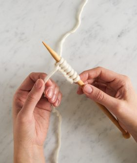
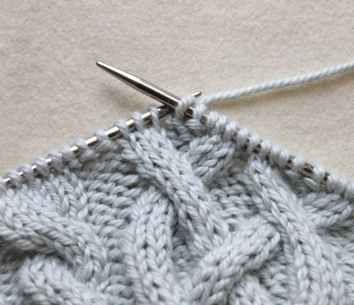
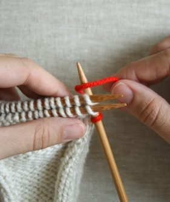
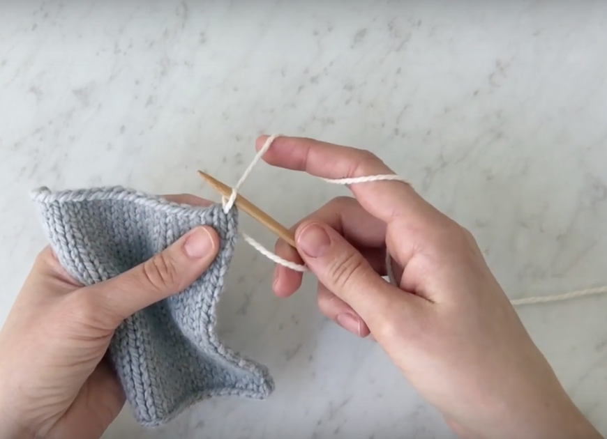
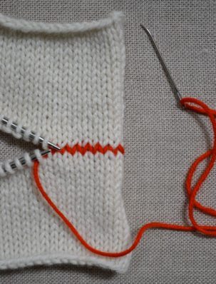
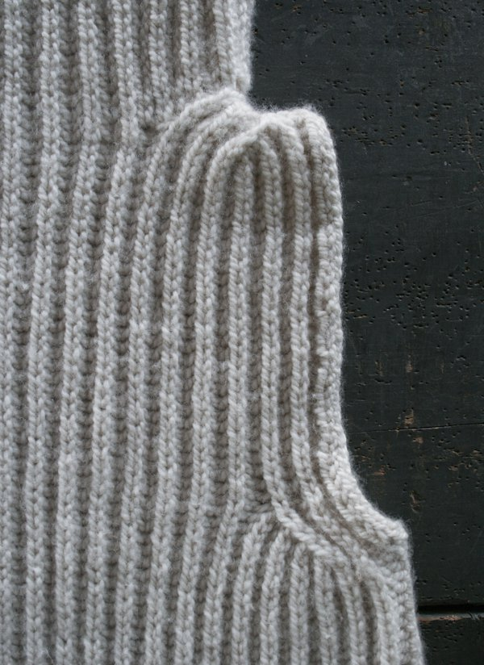
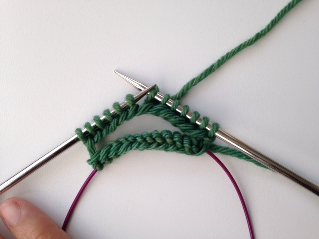
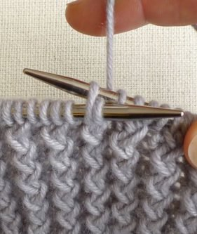
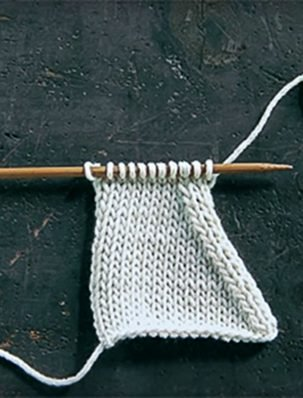

Knitted
Joys
Knitting my way through the chaos
Home
Shop
Blog
Tutorials
Inspiration
About
Category
All
Basics
Decorative Stitches
Increases
Decreases

Long Tail Cast On

Cable Stitch

3 Needle Bind Off

Picking Up Stitches

Kitchener Stitch

Brioche Stitch: Basic Decrease

Magic Loop

Rick Rack Rib Stitch

Slip Slip Knit (SSK)